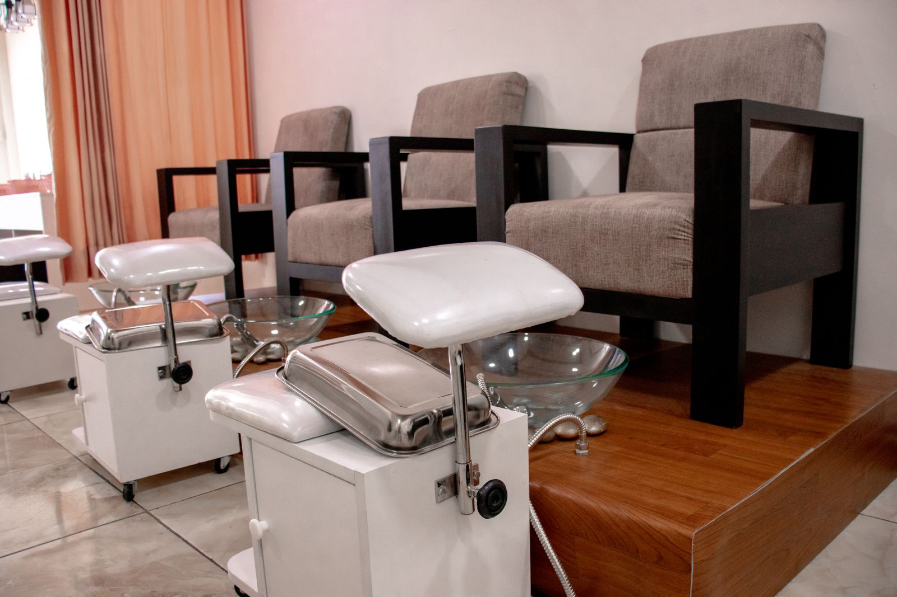
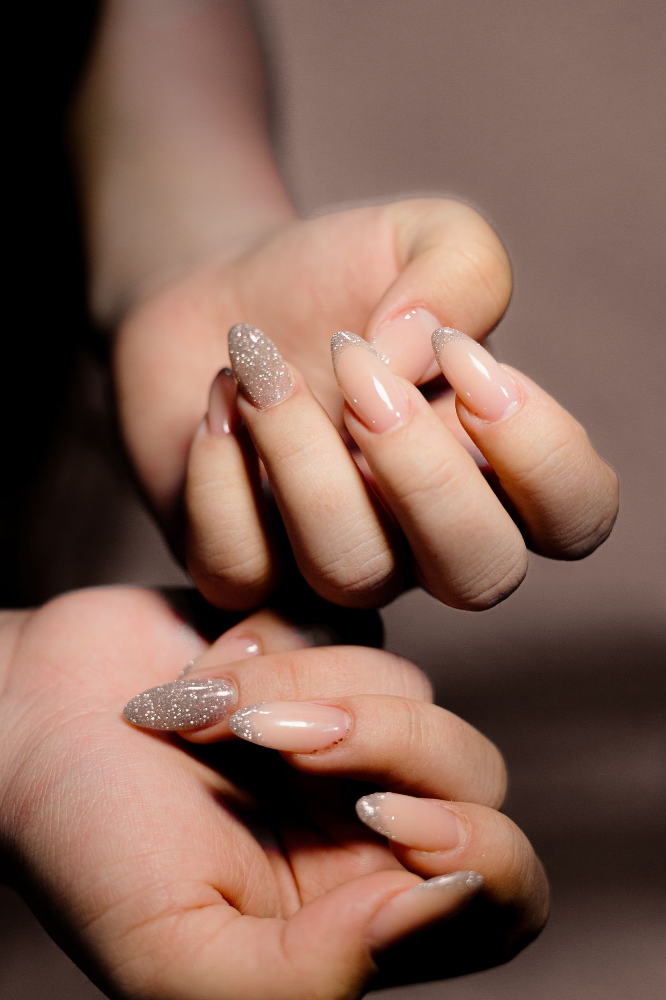

The heart of the studio
Beauty in the
considered details.
A fictional nail studio in Colombo, imagined for a slower, more personal approach to manicure and pedicure care.
Our story
A little more about us
Here for the
way it makes you feel.
Nails Ceylon is a demonstration of a small, considered nail studio: a place for thoughtful manicures and pedicures, a little conversation and a moment that belongs to you.
We believe a beautiful finish starts with attentive care. That means taking time to understand what you like, treating the details with intention and making your visit feel comfortable from beginning to end.
Discover our servicesOur philosophy
Simple rituals.
Personal touches.
Our focus is deliberately simple: manicure and pedicure care, delivered with attention and warmth. We want every detail, from the welcome to the finished polish, to feel considered rather than hurried.
This is a fictional salon concept. Service details, studio images and business information are demonstration content to be confirmed by the salon owner.
Care, without the fuss
A welcoming space
for you.
Whether you’re stopping by for a tidy polish refresh or making an afternoon of it, the experience is designed to feel personal, relaxed and easy.
Plan your visit
We’d love to welcome you
Your moment
starts here.
Get in touch with the studio and let us know what you’re looking for.
Enquire on WhatsApp